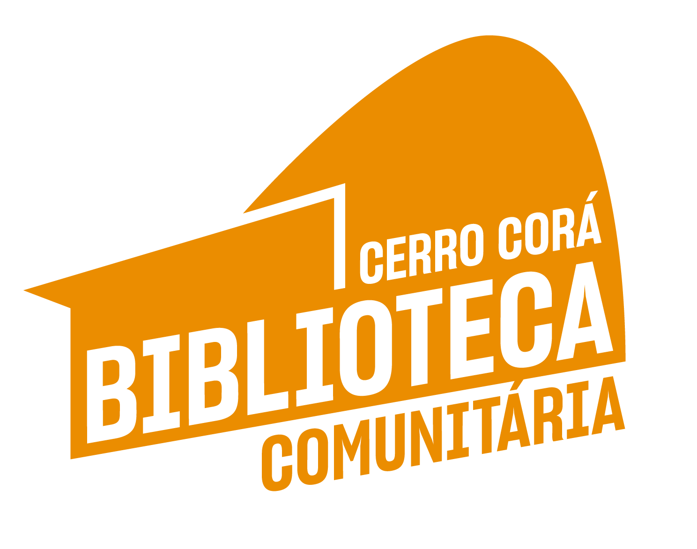
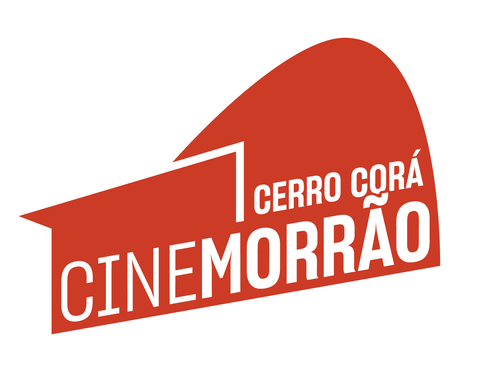

O Instituto Cerro Corá em Movimento (ICCM) é uma entidade sem fins lucrativos,
fundada em 2013 e sediada na favela do Cerro Corá, no bairro do Cosme Velho,
Rio de Janeiro. Ao longo de 12 anos, a organização construiu uma trajetória
marcada pela luta por justiça social, educação popular, promoção do acesso
ao livro e à leitura, possibilitando novas perspectivas de futuro para o território.
Instituto Cerro Corá em Movimento - ICCM
ONG comunitária de educação popular
Projetos

Biblioteca comunitária: Buscamos democratizar a literatura por meio de
ações que proporcionem o acesso à leitura e à escrita principalmente
às crianças moradoras dos morros da região.

Memórias do Cerro Corá: Com o objetivo de planejar ações, mostras e
exposições que visam a valorização da história e memórias dos
moradores do território. Conforme a tradição da “nova” museologia
e “museologiasocial ".

Cine Morrão: Um espaço de exibição de filmes dentro da
comunidade, voltado para moradores de todas as idades.
Com sessões gratuitas e abertas seguidas de rodas de
conversa e debates.
Missão
Promover o acesso democrático à leitura, à escrita
e à cultura por meio de ações educativas, culturais
e sociais que valorizem a memória local, incentivem
a cidadania e potencializem o protagonismo dos
moradores da favela do Cerro Corá e comunidades
vizinhas.
Visão
Ser reconhecido como um espaço de transformação social,
preservação da memória e valorização cultural, contribuindo
para a construção de uma favela mais justa, consciente,
conectada com sua história e com oportunidades reais de
desenvolvimento humano e comunitário.